S-Calc | よくある使い方・計算例
このページでは、Windows向け高機能関数電卓『S-Calc』で行える代表的な計算例を紹介しています。四則演算（加減乗除）、三角関数（度数法・弧度法対応）、モル濃度計算（mol/L）など、エンジニア・学生・研究者の業務や学習に役立つ計算例を、入力例・履歴画面とともに掲載しています。
S-Calcで行える代表的な計算例をまとめました。
以下の目次のリンクから、ページ内の計算例箇所へジャンプすることが出来ます。
基本的な計算例
四則演算（加算・減算・乗算・除算）
四則演算は、S-Calcで直感的に行うことができます。例えば、次のように入力します。
加算
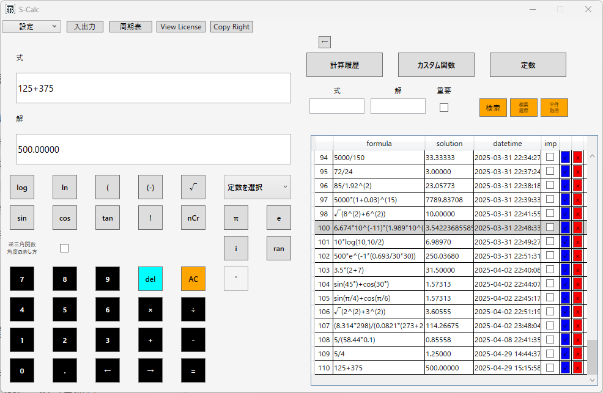
減算
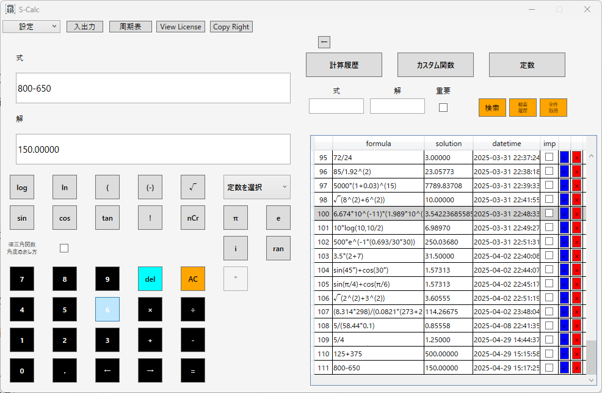
乗算
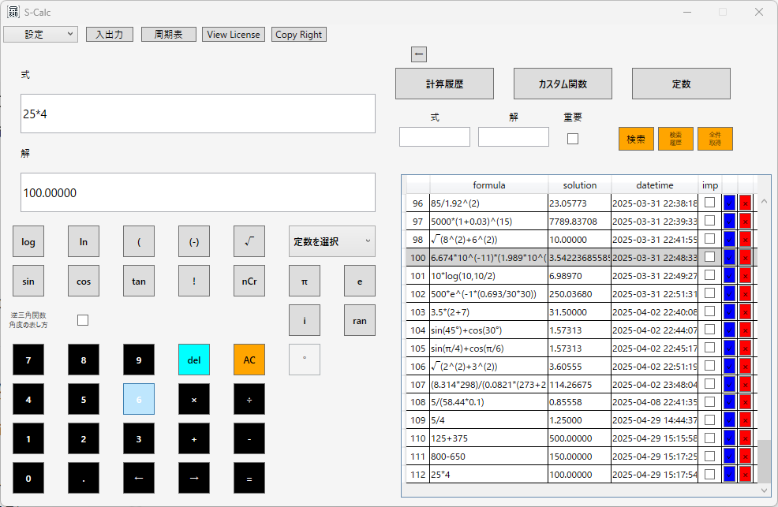
除算
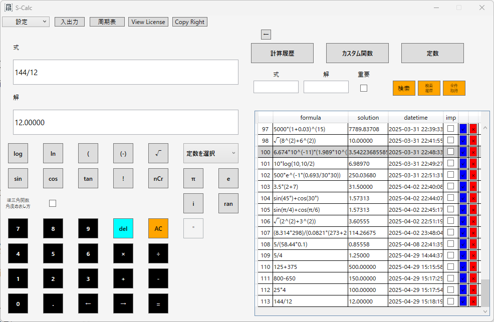
目次へ戻る
関数を使った計算例
三角関数の利用例
三角関数は度数法、弧度法の2種類に対応しています。サイン（sin）：度数法
サイン（sin）：弧度法
コサイン（cos）：度数法
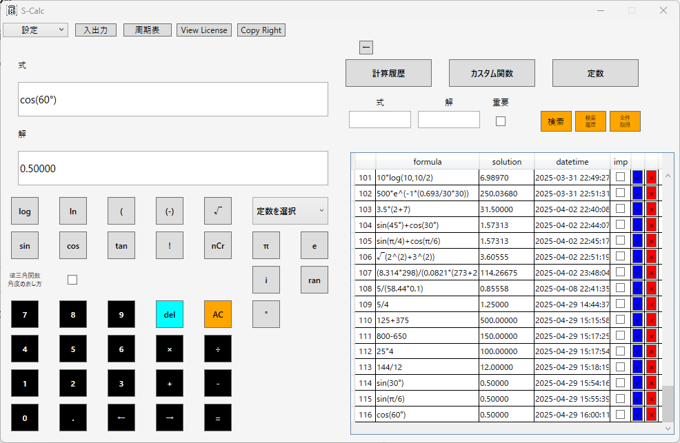
コサイン（cos）：弧度法
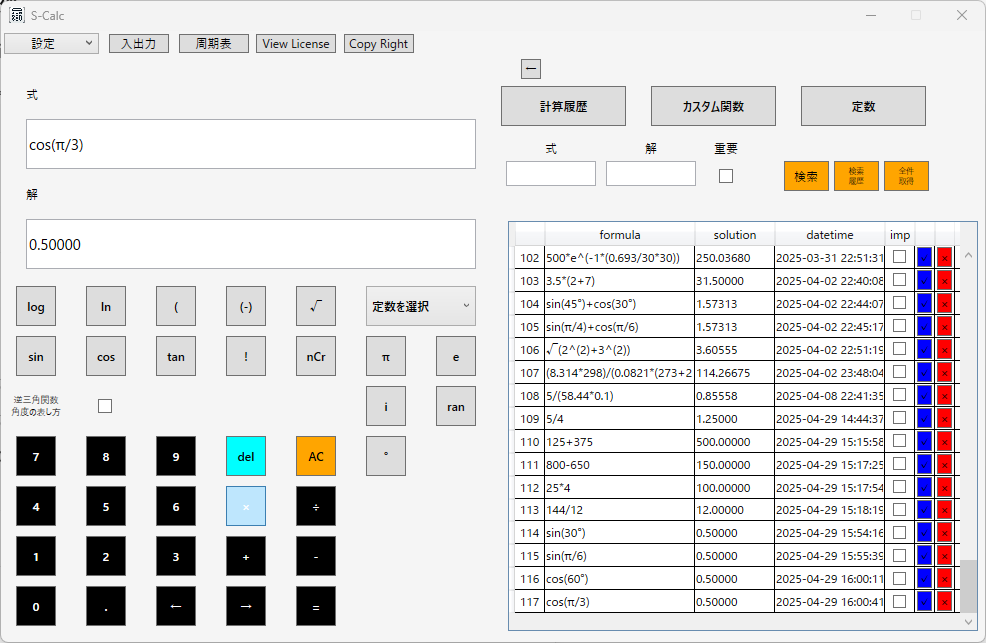
タンジェント（tan）：度数法
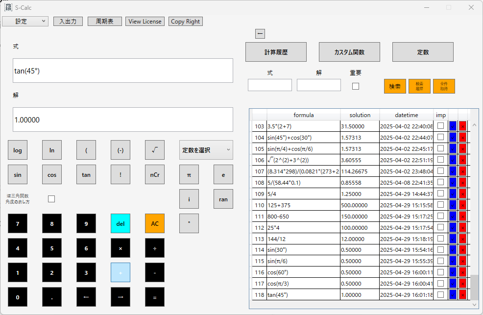
タンジェント（tan）：弧度法
目次へ戻る
逆三角関数の利用例
逆三角関数の解は度数法、弧度法の2種類に対応しています。アークサイン（arcsin）：度数法
アークサイン（arcsin）：弧度法
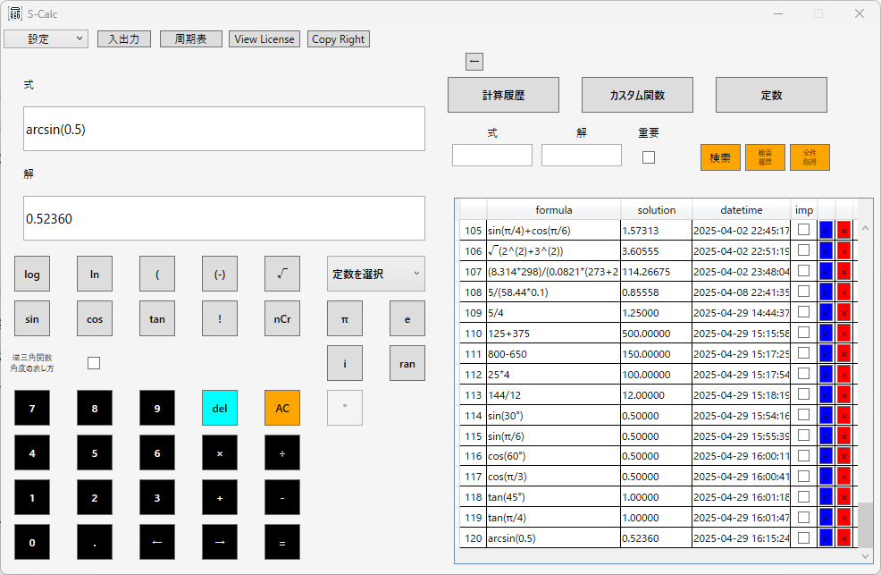
アークコサイン（arccos）：度数法
アークコサイン（arccos）：弧度法
アークタンジェント（arctan）：度数法
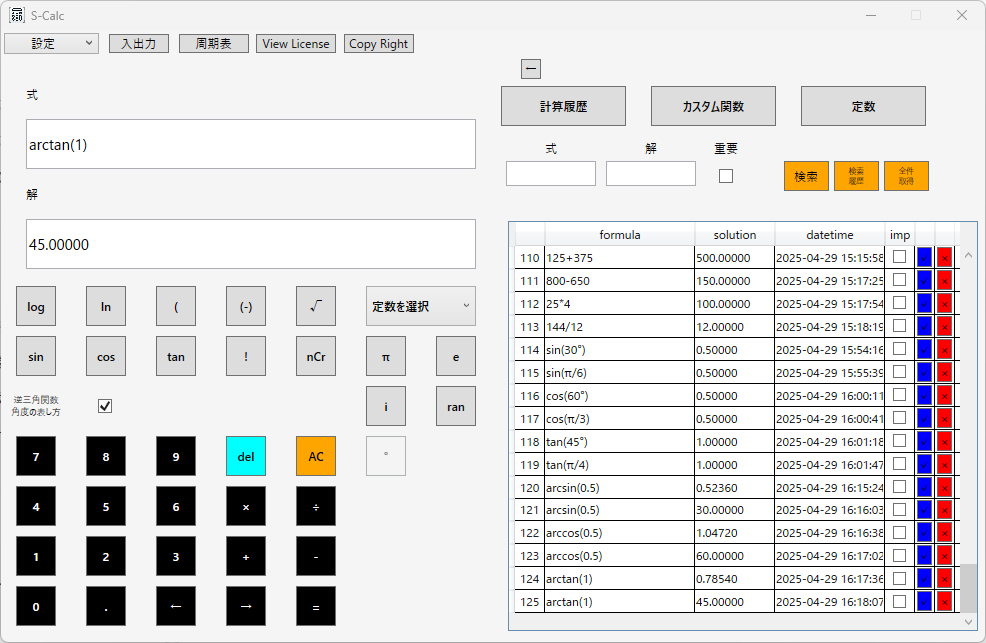
アークタンジェント（arctan）：弧度法
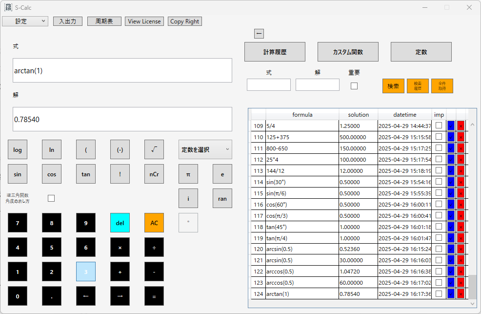
目次へ戻る
指数関数と対数関数
指数関数（eのべき乗）と対数関数（常用・自然）を計算します。自然対数の底eの値
常用対数
自然対数
目次へ戻る
平方根とべき乗計算
平方根（√）とべき乗（^）を計算します。平方根
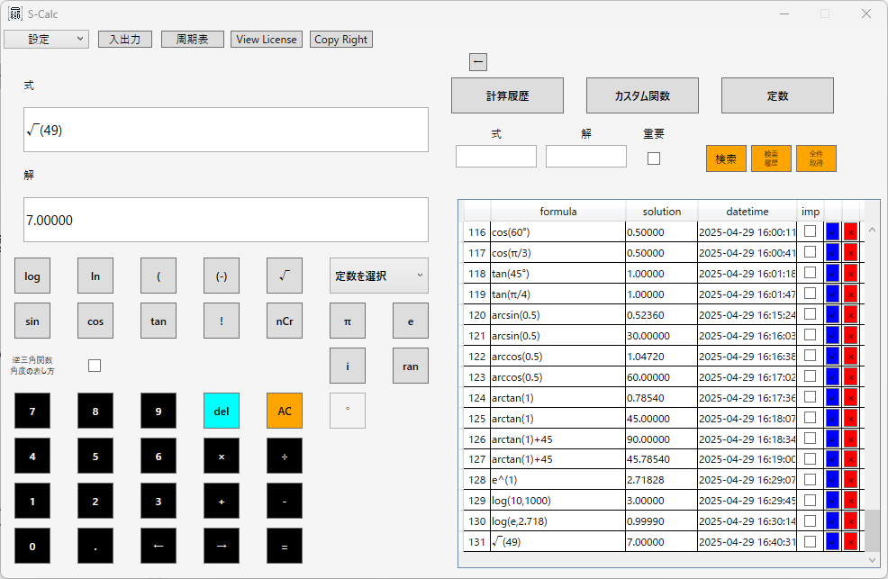
べき乗
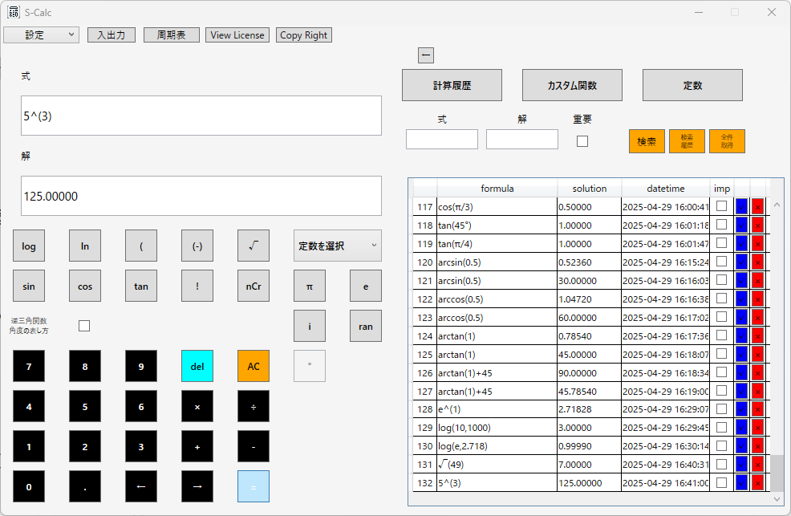
目次へ戻る
べき乗計算で平方根や立方根の計算を行うことも出来ます。
平方根
立方根
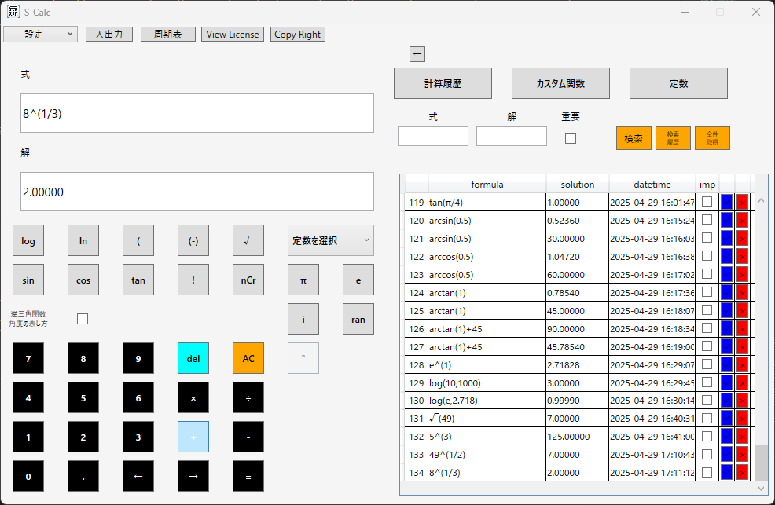
目次へ戻る物理・化学に関する計算例
力の計算（F = ma）
質量と加速度から力を求めます。・質量：2kg, 加速度：9.8m/s^2
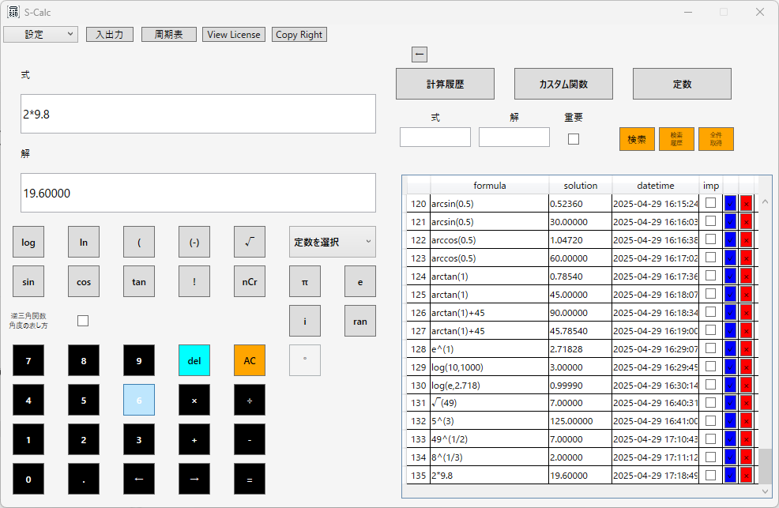
圧力の計算（P = F/A）
力と面積から圧力を求めます。・力：500N,面積：50mm^2
エネルギーの計算（E = mc^2）
質量からエネルギーを求めます。・質量：0.002kg,光速：3*10^8m/s
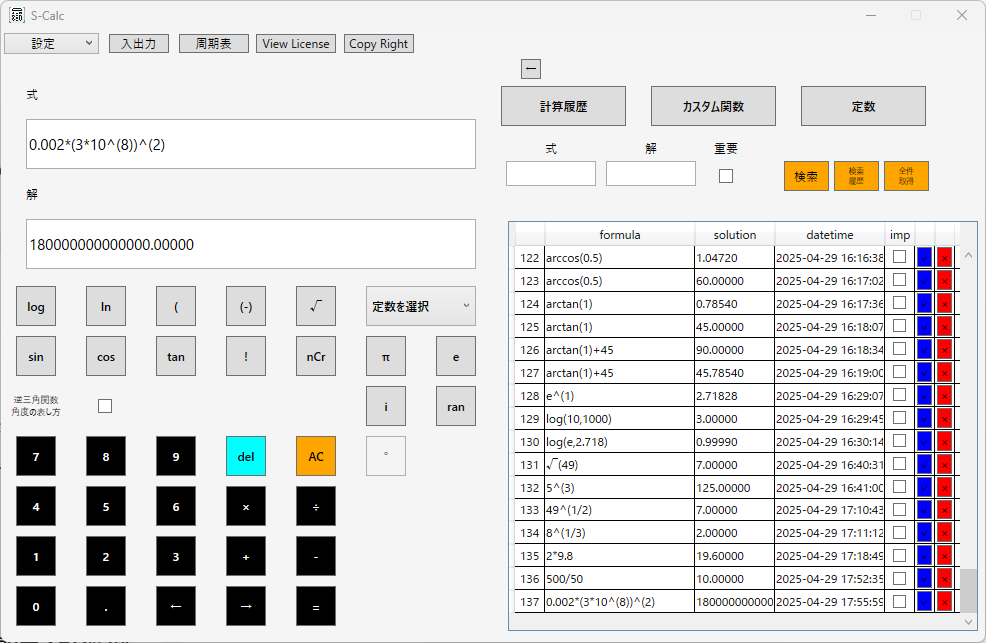
モル濃度の計算
物質量と溶液の体積からモル濃度を求めます。・物質量：0.5mol,体積：2L 目次へ戻る